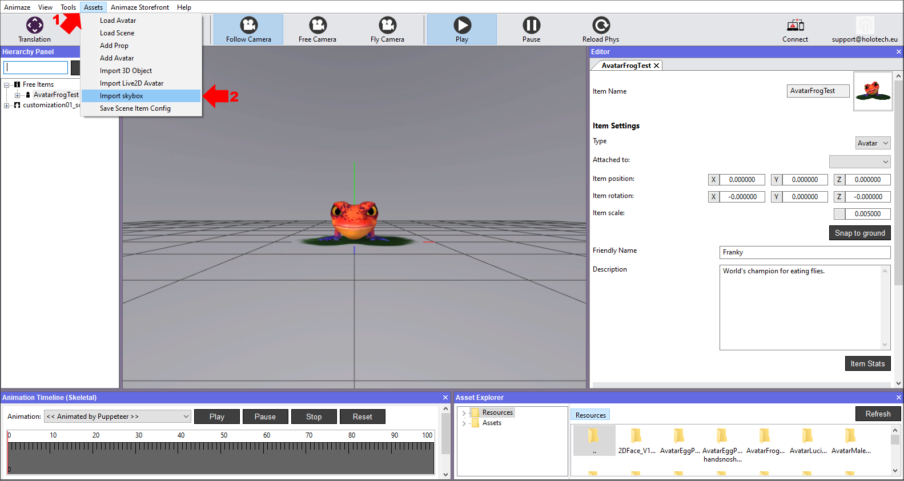
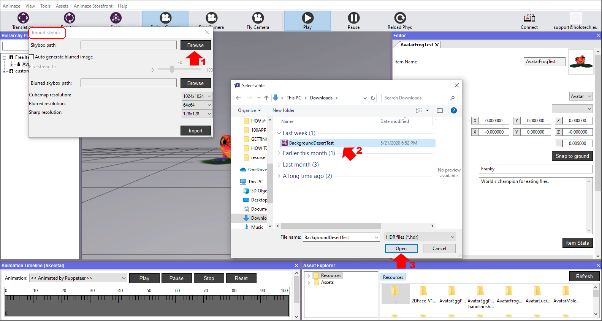
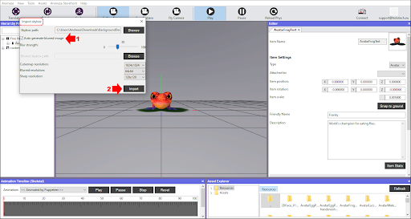
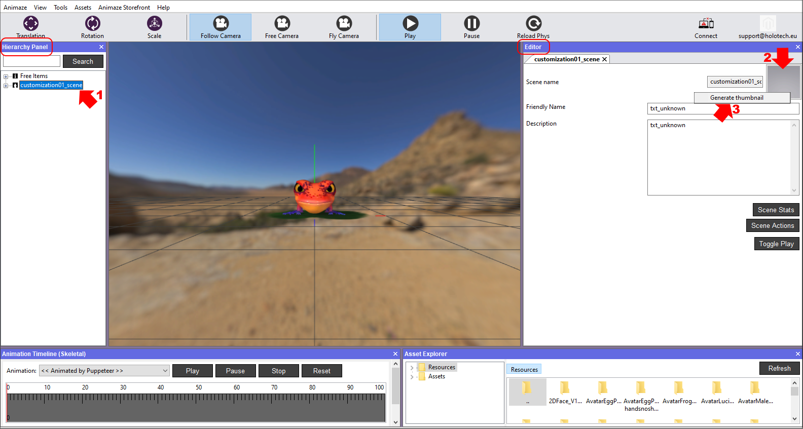
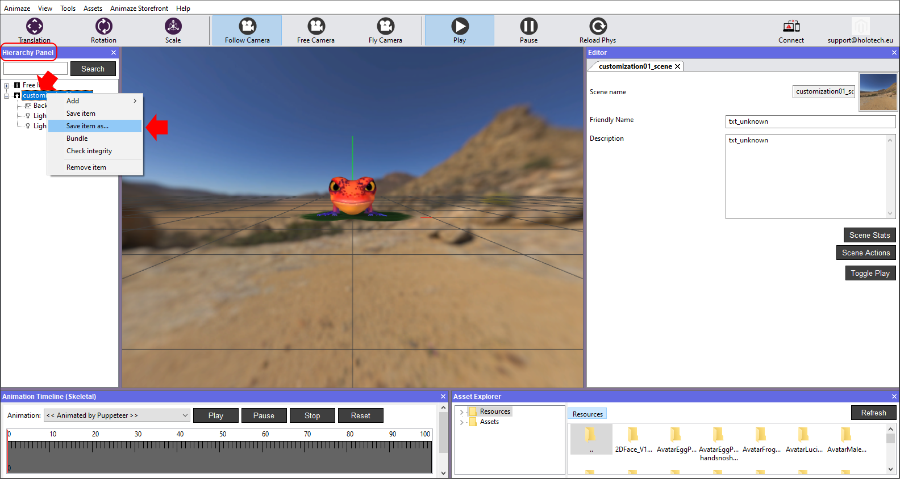
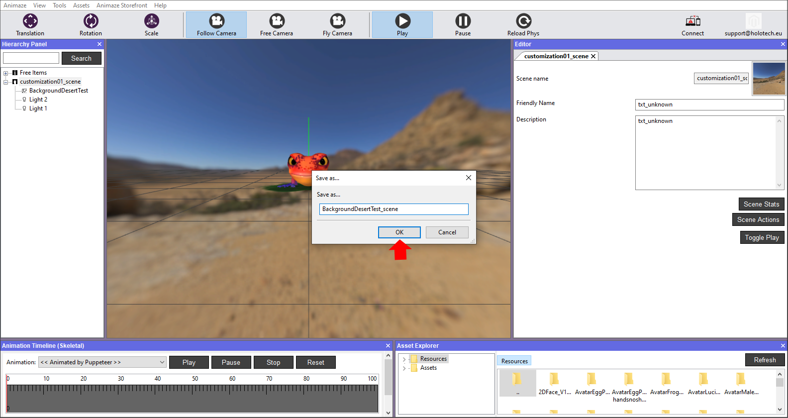
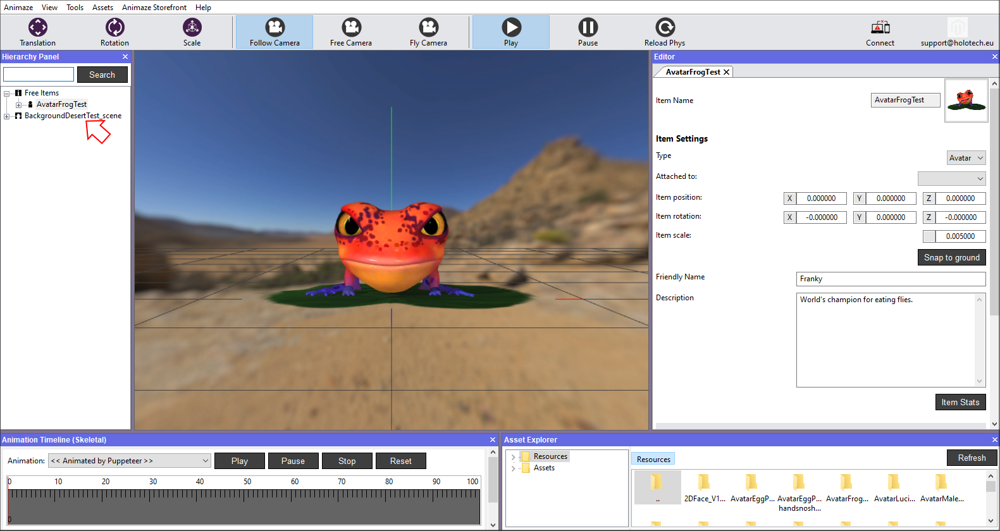
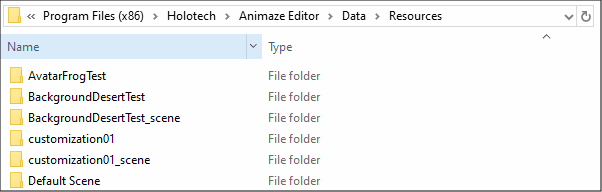

背景（スカイボックス）のインポート方法
Animazeは、Animaze用のキューブにトランスレートされたHDRI（.hdr）キューブをインポートできます。砂漠のシーンを描いた背景を用意しました。
アセット管理を簡単なものにし、各アセットの役割（アバター、小道具、背景など）をはっきりさせるために、アセット名の頭の部分にアセットの種類を示す接頭辞を付ける単純な命名規則を採用しています。以下の3つはその例です：
* avatarName - アバター用
* propName - 小道具用
* backgroundName - 背景用
スカイボックスをインポートするには、以下の手順に従ってください：
-
このリンクからBackgroundDesertTest.hdrのアーカイブをダウンロードして、中身のファイルを展開します。
- Animazeエディターを開き、アセットへ移動し、スカイボックスをインポートを選択します。

-
「スカイボックスをインポート」のウィンドウで「参照」をクリックして、最初のステップでダウンロードしたBackgroundDesertTest.hdrのファイルを開きます。

- 「ぼかし画像を自動生成」のボックスにチェックを入れて、すぐ下の「ぼかしの強さ」レベル設定でぼかし反射マップを生成します。
スカイボックス（または背景）のインポートプロセスにより、3つのテクスチャーが生成されます。1つがアバターの背後でレンダリングされる背景、残り2つが反射マップ（ぼかしとシャープ）です。
3つのテクスチャーの詳細については、以下をご覧ください：
* 画面に直接レンダリングされるスカイボックス/背景のテクスチャー
* アバターおよび小道具のマット表面/メッシュに反射としてマッピングされるぼかし反射マップ
* アバターおよび小道具の光沢表面/メッシュに反射としてマッピングされるシャープ反射マップ
アバターはシーン上ではこのように表示され、見ている人の目が背景の要素によって邪魔されないようになっています。「インポート」をクリックします

これで背景がインポートされ、ビューポートで見れるようになります。アプリのシステムで認識できるようにするにはアイコン画像が必要なので、アイコン画像を作成しておきましょう。
5. 階層パネルでcustomization01_sceneをクリックすると、右側のエディターパネルにそのシーンの詳細が表示されます。現在のアイコンを右クリックして、「サムネイルを生成」を選択します。

-
新しいアイコンが作成され、リアルタイムで適用されます。階層パネルで「アイテムの保存形式」を選択して新しいシーンを保存し、そのシーンに新しい名前を入力します。BakgroundDesertTest_sceneという名前で保存し、OKをクリックします。「Resources」のディレクトリに、オリジナルのバージョンとは別のフォルダーが新しいシーンとして保存されます。


-
新しいシーンが読み込まれます

フォルダー構造はこのようになります：

おめでとうございます！背景のインポートに成功しました